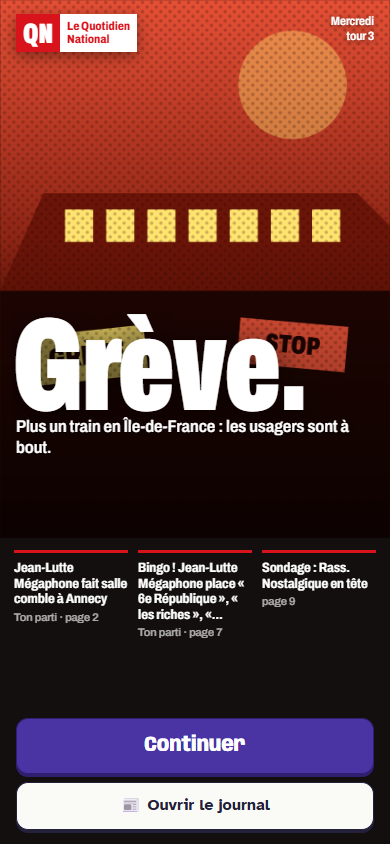

Quatre exemples de ce que Politik pourrait devenir en bande dessinée ligne claire : la France politique d'aujourd'hui, dessinée comme un album des années 50. Tout est tracé à la main, en SVG, dans le dépôt. Rien de tout ça n'est encore dans le jeu.
1. Les personnages Personnalités inventées du jeu, chacune avec sa silhouette
Jean-Lutte Mégaphone, trois expressions
Quatre autres partis
2. Le débat télévisé L'entre-deux-tours, plateau complet puis gros plans
3. La radio La matinale, l'invitée en difficulté
4. Le journal Mêmes titres et même journal que le jeu : à gauche ce qu'il affiche aujourd'hui, à droite ce que ça pourrait donner

Aujourd'hui dans le jeu Capture de l'écran actuel, même événement.
Édition du matinCampagne présidentielle, tour 3
Le Quotidien National
MercrediN° 20271,90 €
Grève.
Plus un train en Île-de-France : les usagers sont à bout.
Ce matin, à l'heure de pointe. Jean-Lutte Mégaphone n'avait pas prévenu la gare de sa venue. Les usagers, eux, n'avaient pas de train.
Campagne
Jean-Lutte Mégaphone fait salle comble à Annecy
Jean-Lutte Mégaphone était à Annecy (Auvergne-Rhône-Alpes) au milieu de militants survoltés. Il a surtout été question du prix de l'essence. « Smic à 1 600 € net, ce sera pour tout de suite ! », a promis Jean-Lutte Mégaphone.
Meeting
Bingo ! Jean-Lutte Mégaphone place « 6e République », « les riches », « insoumission »
Les militants l'attendaient, ils ont été servis : en un seul discours, Jean-Lutte Mégaphone a coché 3 cases de son bingo préféré. La salle exulte. Chez les indécis, en revanche, on a changé de chaîne.
Avis de recherche
Avez-vous vu Bruno Raboteur ?
Signalement : costume bleu, rabot à la main, dernière apparition télévisée il y a plusieurs semaines. Toute information est à transmettre au siège du parti, qui promet une récompense.